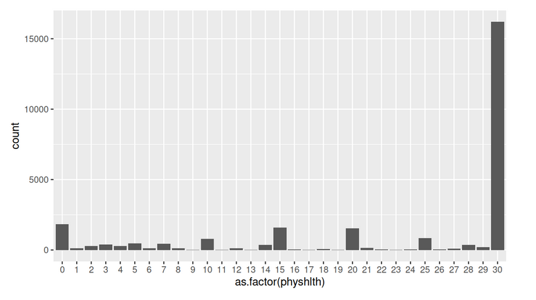

This exploration looked at wage income in Minnesota as reported in the 2019 American Community Survey (ACS) administered through the US Census Bureau. Observations include the following. (a) Wage income was clearly positively correlated with educational attainment. (b) Average wages increased with age into the 40s where they plateau until they begin to decline in the 60s. (c) Whites and Asians had higher average wages than the other major racial/ethnic categories (Blacks, Hispanics, and American Indians). Educational attainment appears to be a factor in explaining this difference. (d) Higher average wages were associated with being married with the spouse present. (e) Differences in average wage income based on sex (males earning higher wages on average than females) existed across the various categories of the factors of age, educational attainment, race/ethnicity, and marital status, highlighting the overall fact of difference as fairly robust.
This project looked at tweets from "We Rate Dogs" over a period of 624 days from November 2015 until August 2017. These tweets are often accompanied by pictures as well as ratings. Not all pictures and posts concern dogs, but most do. Data was gathered from the Twitter API. Assessment identified eleven data quality issues and six tidiness issues. After much cleaning and wrangling, a master dataset was produced. Exploration resulted in the following insights. (a) The four most popular dog names in the tweets were 'Charlie', 'Oliver', 'Lucy', and 'Cooper'. (b) Retweet count and favorite count are strongly positively correlated, as one might expect, with a correlation coefficient of 0.926 which corresponds to a R-squared value of 0.857. (c) Higher favorite counts are associated with higher ratings. (d) Finally, using logistic regression, models were devised to answer the question "How strong is the rating as an indicator for the presence in the post of a dog as opposed to some other kind of animal?"
Guided by a template, statistical analysis was performed on almost 300,000 rows of website user data detailing whether a user received a new or old (“treatment vs control”) version of a website landing page and whether they “converted” (i.e., bought the company’s product) or not. Analysis was performed in three separate ways: a built-in function, a bootstrapping simulation, and logistic regression. It was determined that the new page did not result in a statistically significant difference in conversion rate.
How have fertility rates across countries of the world changed over time? How have fertility rates been distributed across regions of the world recently (2011)? Are fertility rates correlated with other factors? These questions were investigated using Gapminder data. It was observed that fertility rates across countries have been decreasing over time, tending toward rates between 2 and 3 children per woman. In most regions of the world (the Americas, East Asia & the Pacific, the Middle East & North Africa, and South Asia), average regional fertility rates were between 2 and 3, and less than 2 in Europe and Central Asia. The noticeable exceptions were the countries of Sub-Saharan Africa with an average fertility rate of just under 5. It was observed from plots that fertility rates are negatively correlated with income (GDP per capita), life expectancy, sanitation, female literacy, and contraceptive use. One might think that fertility rates would also be correlated with the percentage of females that have joined the work force, but that was not observed.
Temperature data made available by Udacity and obtained via SQL was examined over a period of 264 years (1750 to 2013). Smoothed raw temperature data was visualized to see global and local (Minneapolis) temperature trends. Smoothing and plotting were accomplished in multiple ways involving SQL, Google Sheets, and R. Observations include the following. (a) Minneapolis has been roughly 3 degrees (Celsius) cooler on average that the global average yearly temperature. (b) The average global yearly temperature hovered around 8 degrees (C) until the early twentieth century. (c) The Minneapolis average yearly temperature stayed between roughly 4 and 5 degrees (C) until the early twentieth century. (d) There is an upward trajectory to the temperature, both globally and locally, starting in the early twentieth century and resulting in an increase in average yearly temperature of 1 to 1.5 degrees Celsius as compared with the previous century.

Data from Rotten Tomatoes and IMDb for movies between 1970 and 2014 was used to make linear regression models, taking Rotten Tomatoes' audience score and the IMDb rating as representatives of general popularity. These variables are highly correlated with one another. To find predictors for these variables, Rotten Tomatoes’ audience score was focused on. As expected, critics score was a good predictor. In addition, whether or not a movie was a documentary, a horror, or fit in the genre “Musical & Performing Arts” also was significant and found to make a difference in adjusted R-squared. In making predictions, however, the final models have large uncertainties. So, when using the models, predictions (for such movies as "Knives Out" and "10 Cloverfield Lane") were not that accurate.
This interactive Python program provides the user with options for exploring randomly selected bikeshare data from the first six months (January through June) of 2017 for three large U.S. cities: Chicago, New York City, and Washington DC. After selection of the city and the time period of interest by the user, information is provided about the most frequent times of travel, the most popular stations, trip duration statistics, and user statistics.
This investigation of General Social Survey data found that there was not a statistically significant difference in U.S. confidence in science based on political stance (left-leaning, moderate, or right-leaning) in 2012.
Four questions to explore a DVD rental database were developed and SQL queries were devised to answer them. (1) What is the percentage of overall rentals for each film category grouped by performance quartiles? (2) What is the top rented film overall, and what are the top 5 films rented by customers who rented the top rented film? (3) What are the top 10 films (by rental quantity) rented by the top 100 customers (by rental quantity), and what is the inventory for each of these films? (4) What percentage of sales from family-friendly movies comes from each category of family-friendly movies? A Google slide presentation with visualizations for addressing these questions was created.

Using 2013 data from the Behavioral Risk Factor Surveillance System, this exploratory data analysis examined three questions by means of plots and summary statistics: (1) Are unemployed females aged 18-64 more likely to have health care coverage than unemployed males? The investigation found a difference of 2.9% in favor of females. (2) What is the difference between the mean number of days physical health was not good in the previous month as reported by those who said they were in excellent general health versus those who said they were in poor general health? A large difference of roughly 22 days was found. (3) What are the top three auxiliary forms of exercise reported by female dancers? By male dancers? How do the lists compare? Female dancers listed "walking", "no other activity", and "running" as their top alternatives. Male dancers listed "walking", "no other activity", and "weight lifting" as theirs. So, the lists agree on the first two.